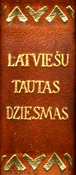
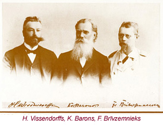

|
| Home | Introduction | Browse | Images | Search | Links |
 |  |
Latviešu tautas dziesmas, (Chansons populaires lettonnes) volumes I — XII . Edited by Arveds Švābe, Kārlis Straubergs, Edīte Hauzenberga-Šturma. Copenhagen: Imanta, 1952-1956.

The project is grateful to Mrs. Eiženija Reitmane, the holder of the copyright of Latviešu tautas dziesmas, for permission to create this electronic edition.The University of Virginia also gratefully acknowledges permission from Dr. Imants Freibergs to utilize his keyboarded text version of Latviešu tautas dziesmas in ASCII format, known as the Boston-Montreal Dainas Data Base, in creating this searchable XML edition.
This project was made possible by the many contributors to the Milda Zīlava Memorial Fund, established at the University of Virginia Library by Professors Maruta and Benjamin Ray. The memorial gifts of the friends and admirers of Milda Zīlava (1908-2003), actress of the Latvian National Theater and Latvian films, and the gifts of the deans and staff of the Office of the Dean, College of Arts and Sciences, have provided the funding for this project. The University thanks each contributor.
